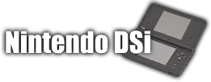

Vous trouverez ici :
• Des tutoriaux en vidéo
• Des liens pour vous aider à hacker votre console
et pour le téléchargement des différents packs
• La simplicité et l'efficacité
Ma chaîne Youtube
Mon twitter
Mon serveur Discord
Site créer par $traker